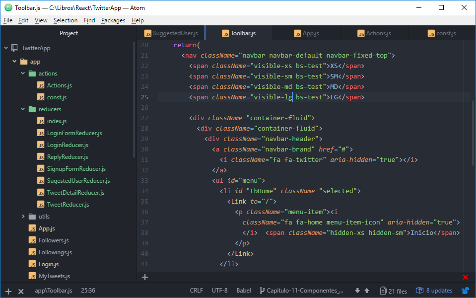
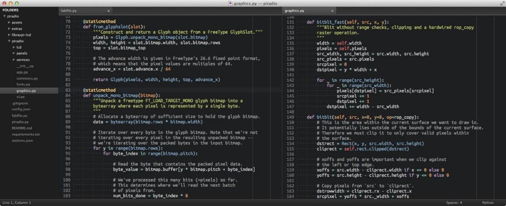
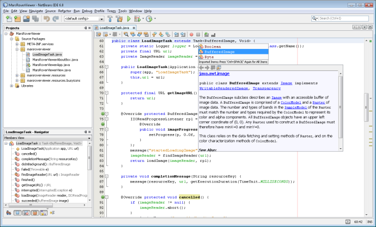
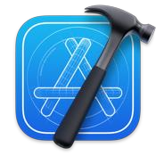

Introducción a los entornos de desarrollo
Programar no es tarea fácil. Aprender un lenguaje, dominar la lógica de la programación y desarrollar código de calidad puede llevarnos bastante más tiempo del que uno imagina al empezar. Por eso resulta imprescindible contar con una serie de herramientas que permitan al desarrollador realizar estas tareas de una manera cómoda y práctica, en lugar de pelearse constantemente con el medio en el que se escribe.
Durante los primeros años de la informática, se programaba directamente sobre la máquina, con interruptores o tarjetas perforadas, y no existía nada parecido a un editor. Con la llegada de las pantallas, el primer paso natural fue usar un editor de texto plano genérico, el mismo que servía para escribir una carta, para redactar código. Ese planteamiento tiene la ventaja de que siempre está disponible —cualquier sistema operativo trae uno—, pero carece de todo conocimiento sobre lo que se está escribiendo: el editor ve letras, no ve código. No sabe qué es una palabra reservada, no distingue un error de sintaxis, no entiende de compiladores ni de depuradores. Programar así equivale a escribir un idioma extranjero sin corrector, sin diccionario y sin nadie que te advierta de los fallos.
De ese punto de partida surgieron dos caminos que conviene distinguir con claridad. El primero fue el de los editores de texto especializados (o enriquecidos), programas pensados para trabajar con código pero que siguen concibiendo el trabajo como un conjunto de ficheros sueltos: resaltan la sintaxis, autocompletan palabras y ofrecen atajos, pero no comprenden el proyecto en su conjunto. El segundo camino fue el de los IDEs (Entornos de Desarrollo Integrado, del inglés Integrated Development Environment), que dieron un salto conceptual: dejaron de ser un simple editor para convertirse en una plataforma que reúne, coordina y entiende todas las piezas del desarrollo.
A simple vista, tanto un editor avanzado como un IDE pueden parecer muy similares, porque en ambos se escribe código y se puede ejecutar pero en los detalles se marcan la diferencia entre una herramienta que solo edita texto y otra que comprende el proyecto entero.
Conviene aclarar que estas tres categorías no son compartimentos estancos, sino puntos de un continuo que ha ido evolucionando. Un bloc de notas moderno puede tener resaltado de sintaxis; un editor como VS Code, que nació como editor, ha ido incorporando tantas capacidades de IDE que hoy es difícil clasificarlo; y un IDE, por debajo, sigue teniendo un editor de texto. La clave no está en la etiqueta, sino en el grado de conocimiento que la herramienta tiene del proyecto.
Editores de texto plano, editores enriquecidos y plugins
Empecemos por el extremo más sencillo. Un editor de texto plano es una herramienta minimalista: abre un archivo, permite escribir caracteres, guarda y cierra. No entiende de lenguajes ni de proyectos, y todo el peso del trabajo recae sobre la persona, que debe recordar la sintaxis, compilar a mano y ejecutar los comandos por su cuenta. Es útil para retoques rápidos y para archivos pequeños, pero se queda corto en cuanto el proyecto crece.
Los editores de texto enriquecidos o especializados añaden una capa de ayuda. Siguen trabajando archivo a archivo, pero incorporan funciones que mejoran mucho la experiencia: el resaltado de sintaxis colorea las palabras reservadas, las cadenas y los comentarios; el autocompletado sugiere palabras a medida que se escriben; la búsqueda y sustitución con expresiones regulares permite hacer cambios masivos; y el sistema de pestañas facilita moverse entre varios archivos. Existen editores sofisticados y elegantes como Atom, Sublime Text y Brackets, que muestran el código de una forma cuidada y permiten cambiar los temas visuales.


Al contemplar las capturas anteriores, lo que se aprecia es, en esencia, un bloc de notas con un árbol de archivos a un lado. Hay pocas opciones visibles y la interfaz es deliberadamente sencilla. Ese minimalismo es a la vez su virtud y su límite: es ágil y ligero, pero no ofrece mucho más allá de lo que hace un buen procesador de texto aplicado al código.
El nivel de extensibilidad de estos editores, aunque ha crecido mucho, sigue siendo más limitado que el de un IDE. Existen plugins que aportan funcionalidades valiosas, pero la ayuda al programador es, por lo general, básica, y la inteligencia a la hora de predecir lo que se va a escribir está bastante acotada. Un editor no "comprende" el proyecto: solo mira el archivo que tiene delante.
Algunas utilidades de los editores de texto
- En general, los editores incluyen funciones muy parecidas a las de los procesadores de texto: cortar, pegar, modificar, importar y deshacer acciones.
- Cuentan con opciones para buscar y reemplazar mediante expresiones regulares, resaltar la sintaxis, autocompletar y trabajar con múltiples pestañas o paneles de ventana.
- Facilitan la puesta en marcha de listas y bases de datos que se pueden cargar en cualquier gestor, como MySQL, con sencillez y rapidez, sin necesidad de cargar aplicaciones especiales.
- Permiten crear notas rápidas e incluso redactar correos.
- A menudo se integran con el software de gestión de código fuente y generan herramientas de automatización a través de complementos.
Son, en definitiva, herramientas magníficas para escribir texto y código, pero se quedan a mitad de camino cuando el trabajo exige comprender un proyecto completo y automatizar tareas repetitivas.
Ejemplos de editores de texto
Muchos editores vienen incluidos en el propio sistema operativo y otros se instalan según las necesidades. Dependiendo de sus funciones, encontraremos editores libres o de pago. A continuación se repasan algunos de los más utilizados.
Notepad++
Notepad++ es un editor de código fuente gratuito para Windows que permite crear y modificar archivos de código de cualquier lenguaje de programación. Es muy útil para desarrolladores web, pero también para toda la comunidad de programadores en general.
Su interfaz sencilla ofrece muchas utilidades, como resaltado de colores, edición de varios documentos a la vez, autocompletado de código o menús contextuales. Está escrito en C++ y utiliza puramente Win32 API y STL, lo que garantiza una mayor velocidad de ejecución y un tamaño de programa más pequeño.
Sublime Text
Sublime Text es un programa de pago, pero cuenta también con una versión de prueba gratuita y de tiempo ilimitado con muchas funciones.
Es un editor de texto y código fuente creado en Python y C++, capaz de escribir código de manera eficiente. Es muy sencillo y minimalista, con las funcionalidades justas para facilitar la codificación. Es multiplataforma, tiene minimapa y permite la previsualización miniaturizada del contenido del archivo, y soporta la mayoría de los lenguajes de programación. Es muy configurable y cuenta con un gran número de plugins para personalizar la plataforma.
Atom
Atom es un editor de código fuente de código abierto desarrollado por GitHub. Sirve para trabajar en cualquier sistema operativo (Windows, OS X o Linux) y permite agregar nuevas características y funcionalidades utilizando su administrador de paquetes integrado. Es una opción interesante para quienes también necesitan una herramienta de colaboración.
Algunas de sus funciones son el autocompletado inteligente, la búsqueda o reemplazo de texto de forma sencilla, entre otras. Tiene integración con Node.js y navegador de sistema de archivos.
UltraEdit
UltraEdit es un editor de texto que cuenta con herramientas para resaltar con color líneas específicas y predefinidas en cada lenguaje. Dispone de autocorrección y autocompletado de las líneas de código. Posee búsqueda avanzada de archivos y reformateo de datos de texto, y tiene un editor hexadecimal, opciones de impresión y la posibilidad de conectarse a un FTP.
Vim
Vim es un editor de texto altamente configurable y muy eficiente para la creación o edición de textos. Se incluye como «vi» con la mayoría de los sistemas UNIX y con Apple OS X. Dispone de un sistema de ayuda completo, resaltado sintáctico, scripting nativo (vimscript), un modo visual para la selección de texto y posibilidad de comparar archivos.
Soporta cientos de lenguajes de programación y formatos de archivo, además de búsqueda y reemplazo de gran alcance. Permite integrarse con muchas herramientas. Es una buena opción para desarrolladores experimentados a quienes les gusta usar una interfaz más antigua o prefieren trabajar a través de la línea de comandos.
CoffeeCup
CoffeeCup es un editor HTML disponible solo para Windows. Ofrece una versión gratuita limitada y otra de pago con una interfaz más completa. Cuenta con un panel de vista previa en pantalla dividida que permite ver lo que genera el código HTML y CSS. Además, tiene una pestaña de etiquetas que incluye referencias para (X)HTML, PHP y CSS. Conviene destacar que para hacer FTP o FTP seguro se necesita una aplicación separada.
Komodo Edit
Komodo Edit es un editor de texto gratuito y de código abierto para lenguajes de programación dinámicos, incluyendo PHP, CSS, JavaScript, Python, Ruby, Perl, Tcl, NodeJS, HTML y muchos otros. Soporta herramientas básicas como editor multilenguaje y autocompletado de código, ofrece análisis de sintaxis en segundo plano, resaltado por colores y la posibilidad de obtener una vista previa de la página web que estemos diseñando.
TextMate
TextMate es un editor de código multilenguaje para Mac. Su sistema de extensiones puede escribirse en cualquier lenguaje, de modo que se pueden automatizar tareas habituales usando el lenguaje que más guste.
Algunas de sus características son la búsqueda y reemplazo de texto en un proyecto, el autocompletado de palabras, la búsqueda por expresiones regulares o el autoemparejado de corchetes y otros caracteres.
Visual Studio Code
Visual Studio Code es un editor de código fuente gratuito, multiplataforma y de código abierto desarrollado por Microsoft para Windows, Linux y macOS. Ofrece una herramienta de programación avanzada como alternativa al Bloc de Notas.
Una de sus características más destacadas es IntelliSense, que de manera intuitiva se adelanta al texto que se va escribiendo. Además, siempre tiene plugins nuevos y actualizados a disposición de los desarrolladores.
BBEdit
BBEdit es un editor de texto para Mac OS y, desde su aparición, también para Mac OS X. Fue diseñado originalmente para editar HTML y está especialmente pensado para programadores y diseñadores web. Ofrece funciones de edición, búsqueda y manipulación de texto. Puede probarse gratuitamente durante 30 días y, después, seguir usándolo de forma gratuita con funciones limitadas; para aprovecharlo a plena capacidad hay que pagar una suscripción.
IDEs: cuando la herramienta comprende el proyecto
Llegamos a las grandes ligas. Un IDE es mucho más que un editor con más botones: es una plataforma que reúne en un mismo programa todas las herramientas que un desarrollador necesita y, lo que es más importante, las hace trabajar de forma coordinada sobre un conocimiento compartido del proyecto.
La diferencia fundamental respecto a los editores no está en la cantidad de funciones, sino en el modelo de trabajo. Un editor trabaja con archivos y carpetas sueltos: abres una carpeta y ves lo que hay dentro, sin más. Un IDE trabaja con Proyectos: una unidad superior que agrupa el código, pero también toda la información que la herramienta necesita para entenderlo.
Un proyecto es, físicamente, una carpeta en el disco duro, pero con una diferencia crucial: el IDE crea archivos adicionales al código para optimizar la experiencia. En esos archivos vive la configuración del proyecto: cómo se ejecuta, cómo se despliega, qué tipo de aplicación es, qué librerías externas usa, qué versión del lenguaje se emplea. Esa información no forma parte del programa en sí, pero es lo que permite al IDE ofrecer todas sus ayudas sin que el programador tenga que repetirlas cada vez.

Debido a que los IDE son plataformas muy complejas, es posible hacer con ellos un sinfín de cosas, y los plugins que ofrecen son prácticamente ilimitados. Entre las capacidades que más destacan están:
- Debugger en tiempo real: permiten detener la ejecución del programa, inspeccionar el valor de las variables y avanzar paso a paso, algo imprescindible para cazar errores lógicos.
- Visualización gráfica de casi cualquier tipo de archivo: XML, JSON, UML, bases de datos, interfaces gráficas, etc. El IDE no ve un texto plano, sino una estructura que puede representar de forma comprensible.
- Ayuda en tiempo real: a medida que se escribe, el IDE ofrece las clases o métodos disponibles, qué parámetros reciben y qué devuelven, e incluso muestra la documentación asociada. Es como tener un manual que se abre solo en la página que hace falta.
La arquitectura interna de un IDE
Para entender por qué un IDE es tan potente, conviene mirar dentro y ver las piezas que lo componen. Aunque el usuario lo percibe como un programa único, por debajo conviven varias herramientas especializadas que se coordinan entre sí:
- Editor de código: es la pieza visible, el lugar donde se escribe. A diferencia de un editor genérico, este conoce el lenguaje: colorea la sintaxis, autocompleta, marca errores en tiempo real y ofrece refactorizaciones. Es la puerta de entrada al resto del sistema.
- Compilador integrado: traduce el código fuente escrito en un lenguaje de alto nivel a código objeto, la representación que la máquina puede entender. En un IDE, la compilación no es un paso aislado que se lanza a mano: está integrada y puede ejecutarse al vuelo, de modo que los errores de sintaxis se detectan casi mientras se escriben.
- Enlazador (linker): combina los distintos archivos de código objeto y las librerías externas para producir un único fichero ejecutable. Es la pieza que une las partes y resuelve las referencias entre ellas.
- Depurador (debugger): permite ejecutar el programa de forma controlada, detenerlo en puntos concretos y observar qué está pasando por dentro. Es la herramienta que convierte un error misterioso en un dato concreto.
- Analizador estático: examina el código sin ejecutarlo y detecta patrones problemáticos, código muerto, posibles errores o malas prácticas. Es como un revisor que lee el programa antes de que llegue a ejecutarse y avisa de lo que huele mal.
Lo importante no es que cada herramienta exista por separado, sino que todas trabajen juntas sobre un mismo modelo del proyecto. El editor sabe qué clases existen porque el compilador las ha analizado; el depurador puede mostrar los nombres de las variables porque comprende la estructura del código; el analizador estático puede sugerir mejoras porque conoce el conjunto. Esa coordinación es lo que hace que un IDE se sienta "inteligente" y que un editor, por muy avanzado que sea, se quede corto.
El modelo de Proyectos frente a los ficheros sueltos
La diferencia de flujo de trabajo entre un editor y un IDE merece un apartado propio, porque es la que más afecta al día a día.
Cuando se trabaja con un editor de texto, el modelo es el del sistema de archivos: se abre una carpeta y se tratan los ficheros como elementos independientes. Si el proyecto necesita compilarse, hay que abrir una terminal, escribir el comando de compilación, ejecutar el programa, y repetir ese ritual cada vez. Si se quiere probar con distintos parámetros, hay que recordar cómo se lanzaba. Si se quiere saber qué clases existen, hay que buscarlas a mano. Toda la coordinación recae en la persona.
Con un IDE, en cambio, el proyecto es la unidad de trabajo, y todo gira a su alrededor. Al abrirlo, el IDE lee su configuración y ya sabe cómo compilarlo, cómo ejecutarlo, qué librerías usa y qué versión del lenguaje necesita. El programador no tiene que recordar comandos: pulsa un botón y la herramienta hace lo correcto. Los archivos de configuración que el IDE añade a la carpeta son, precisamente, esa memoria del proyecto, y son los que permiten que cualquiera que abra el proyecto en su equipo lo encuentre listo para trabajar.
Esa diferencia tiene consecuencias muy prácticas. En un IDE, el conocimiento del proyecto está desacoplado del código: la configuración no se mezcla con el programa, sino que vive en archivos aparte, de manera que el mismo código puede ejecutarse con distintas configuraciones sin tocarlo. Esto es lo que permite, por ejemplo, tener un perfil de ejecución para pruebas y otro para producción, o cambiar de versión de Java sin reescribir una sola línea. El modelo de proyectos es, en definitiva, el paso de tratar el código como una colección de textos a tratarlo como un sistema que se entiende y se gestiona como un todo.
Características de los IDEs
Cualquier IDE debe reunir una serie de características básicas que garanticen que la experiencia del usuario será satisfactoria. Las esenciales son las siguientes:
- Editor de código: un editor de texto creado exclusivamente para trabajar con el código fuente de programas informáticos.
- Compilador: un programa encargado de traducir las instrucciones escritas en un lenguaje de programación a código objeto, el único lenguaje que el ordenador entiende.
- Depurador o debugger: un programa que permite probar y buscar errores en otros programas.
- Linker: la herramienta que combina diferentes archivos de código fuente para convertirlos en un único fichero ejecutable.
- Refactorización de código: el proceso de recurrir a funciones como el reformateo o la encapsulación para mejorar el código fuente sin cambiar su comportamiento.
Ejemplos de IDEs
El abanico de IDEs es muy amplio, y decantarse por uno u otro dependerá de las exigencias y necesidades de cada programador, que incluso puede usar IDEs diferentes para trabajos distintos. Entre las alternativas más utilizadas y mejor valoradas están las siguientes.
Eclipse
Eclipse es, probablemente, uno de los IDEs más utilizados, y la clave está en que se trata de un entorno de desarrollo integrado de código abierto y multiplataforma. Desarrollado por IBM en su inicio, hoy lo gestiona la Fundación Eclipse, una entidad legal sin ánimo de lucro. Cada año cuenta con una versión actualizada que incluye una enorme biblioteca de plugins para desarrollar todo tipo de aplicaciones con Java, JSP, C, C++, Python, Ruby, PHP, entre otros.
Cuenta con una lista de tareas y un editor de texto que muestra el contenido del fichero en el que se trabaja; la compilación se lleva a cabo en tiempo real y, a medida que se avanza en el diseño, su asistente propone recomendaciones para solucionar errores y optimizar el código.
NetBeans
NetBeans es otro IDE de código abierto y gratuito, con el que crear aplicaciones empleando lenguajes como Java, PHP, C++, HTML, etc. Puede ejecutarse en cualquier sistema operativo y entre sus ventajas está que permite programar con el framework de Java Swing, lo que facilita el desarrollo de aplicaciones con entorno gráfico, es decir, mucho más dinámicas. También se puede programar para Android instalando los plugins necesarios. Entre sus atractivos están el manejo automático de la memoria y una interfaz de usuario muy cómoda.
Visual Studio
Visual Studio es la apuesta de Microsoft, un IDE que ofrece al programador múltiples funciones para crear código, depurar errores o realizar pruebas en el desarrollo de aplicaciones con el marco .NET y en cualquier plataforma. Su editor de código es compatible con IntelliSense y su depurador funciona tanto a nivel fuente como a nivel máquina. Cuenta con un generador de perfiles de código y permite crear aplicaciones GUI, diseños web o utilizar su diseñador de esquemas de base de datos.
Xcode

Xcode es el IDE oficial de Apple, creado para desarrolladores de Mac e iOS, que también facilita programar en Java. Incluye infinidad de herramientas para desarrollar software para iOS, macOS, watchOS y tvOS. Incorpora un excelente depurador, un generador de GUI y permite el autocompletado de perfiles. También ofrece soporte para AppleScript, Python, Ruby, Swift, C, C++, Objective-C y Objective-C++.
IntelliJ IDEA
IntelliJ IDEA fue creado por JetBrains y tiene dos versiones. Una, de libre descarga, la Community Edition; y otra, la Ultimate Edition, cuyo precio supera los 500 dólares de suscripción anual, pero que ofrece un periodo de prueba gratuito durante 30 días para comprobar lo que ofrece. Permite utilizar diferentes lenguajes de programación y trabajar con distintas versiones de software sin que afecte al desarrollo del trabajo. Es el IDE que estudiaremos en profundidad en el siguiente apartado.